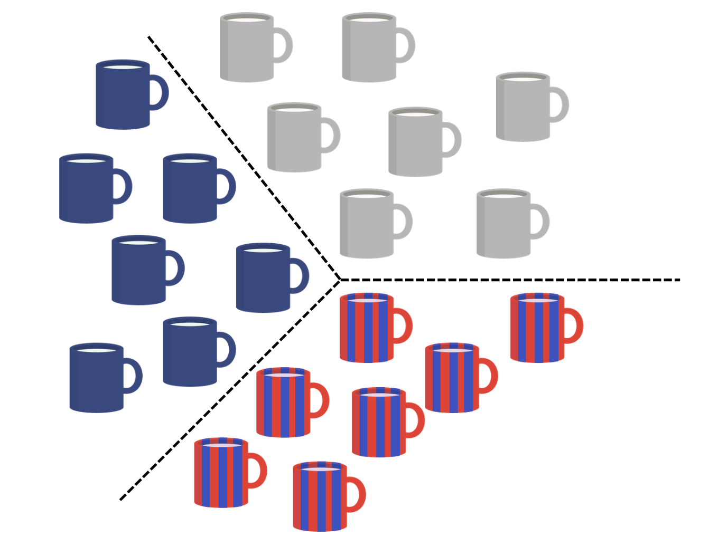
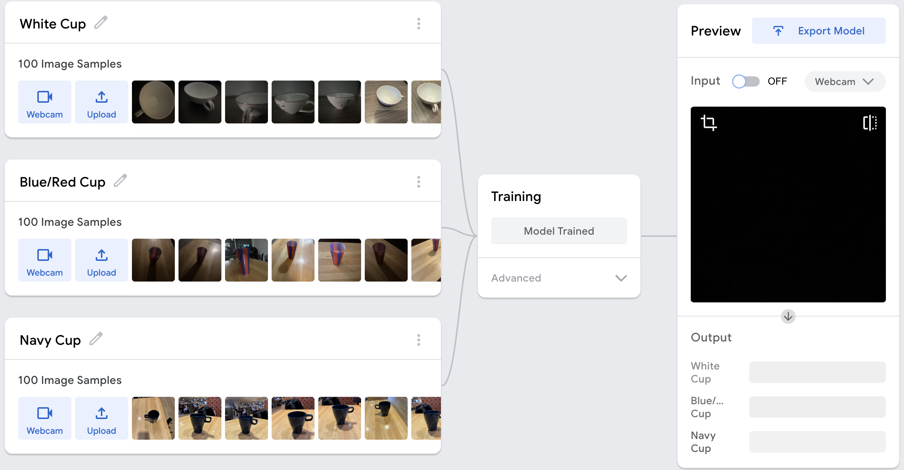
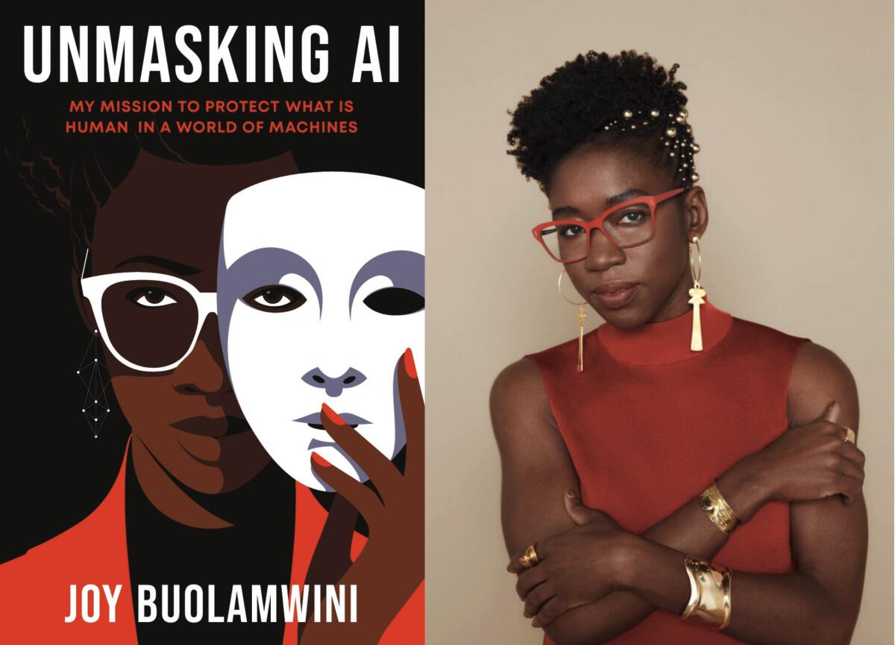
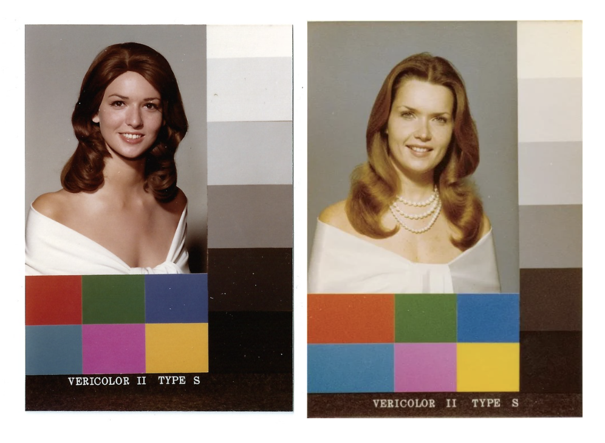
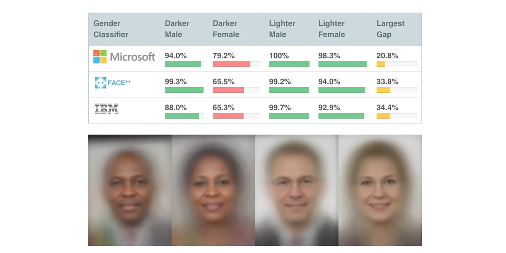
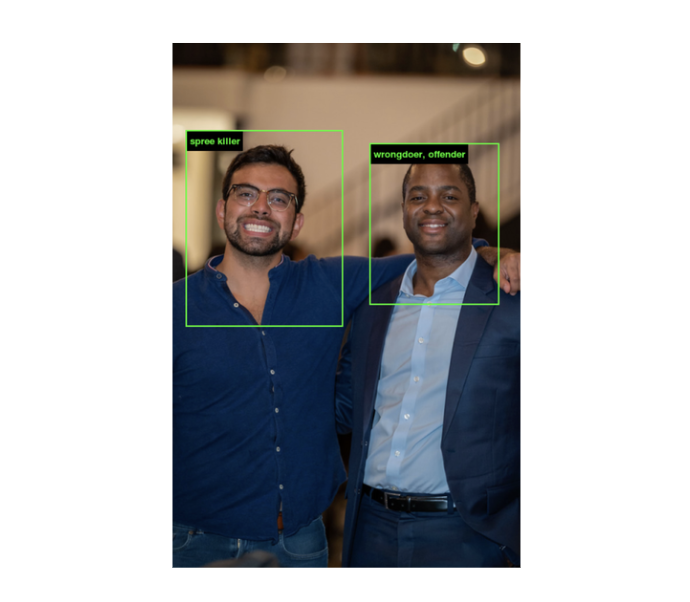
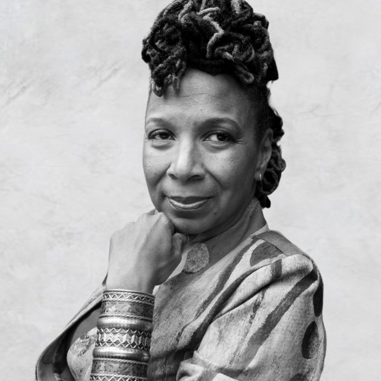

Teachable Machine Project
Emilia & Christian
Project Overview
This project explores the process of training a machine learning model using Google's Teachable Machine, with the goal of understanding how AI systems recognize and classify visual data.
Our group developed an image classifier designed to distinguish between different categories of images, specifically different styles, shapes, and colors of cups. The purpose of this project is not only to build a functional machine learning model, but also to better understand how data influences the way algorithms learn and make decisions. By collecting and using original images, we are directly shaping the dataset that the model relies on, which allows us to observe how variations in images, such as lighting, angle, and background, impact the model's performance.
Through this process, we aim to explore both the technical and conceptual aspects of machine learning. Using Teachable Machine makes it possible to experiment with training an AI model, while still revealing the challenges behind accurate image classification and data collection. This project also encourages us to think about how artificial intelligence systems are built and how the data used to train them can affect outcomes, especially with real-world aplications.

Project Scope
The scope of this project includes using Google's Teachable Machine to develop a machine learning image classifier. The project involves collecting and organizing image data, training the model, embedding it into a webpage using HTML, and testing its performance in real time through live webcam input. One of our main goals for this project was to learn more about machine learning systems and understand how they work. We were able to do this directly using our own data. Another goal that we had was that we wanted to evaluate how the variety of the data affects model accuracy. We also want to learn more about how teachable machines can struggle when faced with unfamiliar inputs, and how bias in datasets can influence results. Before we started this project, some of the challenges we expected to face had to do with inconsistent predictions. The limited data allows for problems such as sensitivity to the lighting and background changes. Another road block we thought we might have to anticipate for was that the model might classify some categories more accurately than others. Overall, we’re excited to work on this project because it gives us hands-on experience with building a machine learning system in a web environment that can help us once we graduate and start our careers.
Process
Our group created an original dataset to train a machine learning model. We focused on classifying different categories of cups. This included using various colors, backgrounds, angles, distances, use of lights, shapes, and sizes. We collected 100 images from 3 different types of cups resulting in a total of 300 images. This allowed us to better understand how the data we collected directly affects the model's performance, outcomes, and potential bias. This helped make the dataset more diverse, given the various images captured. After collecting the images, we organized them into 3 labeled categories.
Class 1 = White Cups
Class 2 = Blue/Red Cups
Class 3 = Navy Cups
These were then used for training, where Teachable Machine uses TensorFLow.js. Teachable Machine uses supervised learning to complete this. This model is based on data input, model training, and real-time predictions. During training, the model is able to recognize and pick up patterns seen in the samples we provided. The model is able to identify patterns within the provided samples and adjust its parameters accordingly. This showed the importance of data quality and variation in building an effective machine learning model.
After training, the model is then able to predict new inputs in real time. These predictions are based on the sample data our group provided.

Project Demo Video
Test the Model
Testing and results
During testing, our model was evaluated using a wide variety of inputs beyond the original dataset, including different cup colors, lighting conditions, backgrounds, camera angles, distances, and miscellaneous non-cup objects with various colors. This helped us understand how the model generalizes beyond of its training data.
We found that the model heavily relied on color as its main feature for classification rather than the actual shape of the cups. Instead of recognizing structural features of a cup, it often made predictions based on whether an image appeared closer to “white”, “red/blue”, or "navy."
Lighting also played a significant role in the model's behavior. Since many white cup images in the dataset were taken in darker lighting, the model sometimes classified darker or shadowed cups as white cups. This showed that it associated lighting conditions with labels rather than actual object identity.
Backgrounds were another major influence. Because many red/blue cup and the navy cup images were taken in front of a brown or wooden background, the model sometimes linked that background with the red/blue class or the navy class. As a result, white cups placed on similar wooden/brown backgrounds were occasionally misclassified.
We also observed that distance and angle affected accuracy. Cups placed closer to the camera were more likely to be correctly identified, while those further away were less accurately classified.
Overall, the testing revealed that ML models depended more on surface-level patterns (color, background, lighting, and scale) than on true object recognition. This highlights the importance of diverse and balanced training data when building machine learning models, especially those that have high real-world impact and require reliable, consistent performance across different environments and conditions.
Relation to Unmasking AI by Buolawmini
Bias was present in our AI model, even though the task seemed simple: classifying cups into Class 1 (white cups), Class 2 (red/blue cups), and Class 3 (navy cups). Even in this basic system, the labels and decisions we made directly shaped how the model learned. The outputs were highly dependent on the dataset we created, including how we defined, separated, and labeled each class.
This demonstrates a key idea: AI systems are not neutral. They rely entirely on the data they are trained on, as well as how that data is collected, structured, and represented. In our model, we observed that the background of the images had a significant influence on classification. This shows that the model was not truly “understanding” cups; it was learning patterns, including background color or lighting conditions.
Separating objects into fixed categories also highlights how classification systems can oversimplify reality. Even though these were everyday objects, grouping them into strict labels reduced variation. This reflects a broader issue in real-world AI systems, where complex traits are often treated as fixed and easily defined, when in reality they are not.
Our model also made clear errors: for example, when a non-cup object was placed in front of the camera, the system still classified it as one of the cup categories. This is similar to what is known in computer vision as a false positive, when a system detects something that is not actually there. These mistakes highlight the limitations of AI systems and how easily they can misinterpret unfamiliar/underrepresented inputs.
These observations connect directly to the ideas in Unmasking AI by Joy Buolamwini, which explains how bias emerges from both data and design choices. One example from the book is the challenge of poor illumination in computer vision. Cameras operate within the limits of the visible light spectrum, and these constraints can affect how different subjects are represented.
An example of this bias is the “Shirley card,” a standard image used to calibrate film cameras. These cards originally featured a white woman and were used to set ideal exposure and color balance. As a result, people with darker skin tones were not accurately represented in photographs. This shows that even “default” technical settings are not neutral. They reflect specific assumptions and priorities.
The book also discusses how bias in AI can lead to serious real-world consequences. Facial recognition systems, for example, have been shown to misidentify individuals, especially those from underrepresented groups, due to incomplete or biased training data. These errors can lead to wrongful accusations in criminal investigations, demonstrating how small technical flaws can scale into significant harm. This relates to our model because it also made incorrect classifications and was influenced by factors like background and image conditions rather than just the cup itself. While our example is low-stakes, it shows how AI systems can rely on patterns instead of true understanding, leading to errors that could be much more harmful in real-world applications.
Bias in AI has also impacted students. During the COVID-19 pandemic, Buolamwini stated that many schools used facial recognition based proctoring systems for online exams. Reports showed that darker-skinned students were more likely to be flagged as suspicious or were sometimes unable to verify their identity, putting them at a disadvantage.
The book also critiques large datasets like ImageNet, which are widely used to train AI models. Although ImageNet contains millions of labeled images, it also includes harmful and inaccurate classifications. For example, some images of dark-skinned individuals were labeled with terms like “wrongdoer” or “offender.” This shows how biased labeling within datasets can directly influence how AI systems interpret and categorize people.
Overall, AI systems reflect human decisions at every stage, from data collection to labeling to model design. Even a simple cup classification model revealed how bias can enter through seemingly small choices. Accuracy and fairness of an AI system depend entirely on the quality and thoughtfulness of its training data. Without careful design and critical evaluation, these systems can reinforce and amplify existing biases and produce harmful or misleading outcomes in real-world applications.




Intersectionality in AI
This also connects to the meaning of intersectionality. Intersectionality is the idea that a person has multiple identities that overlap and shape who they are, including aspects like background, experiences, race, gender, and other social categories. These identities are not separate; they interact and create a more complex reality than any single label can capture.
In the TED Talk “The Urgency of Intersectionality” by Kimberlé Crenshaw, Crenshaw explains how people with overlapping identities are often misrepresented or overlooked when systems only focus on one category at a time. When systems fail to account for these overlaps, they can produce incomplete or inaccurate understandings of people's experiences.
This relates directly to our AI classification task. Even though we were classifying simple objects like cups, the process shows how difficult it is to force things into a single category. Just like people cannot always be defined by one identity, objects or data points in AI systems may not fit neatly into one label. There can be multiple features or interpretations that overlap, but classification systems often force a single decision.
This demonstrates a limitation of AI systems: they often simplify complexity into rigid categories. In real-world applications, this can lead to misrepresentation, especially when systems are used to classify people. Intersectionality helps explain why this is a problem; it shows that reducing complex identities or characteristics into single labels can erase important differences and lead to bias or unfair outcomes.

Lessons Learned
One of the biggest lessons from this project is that AI systems are only as good as the data they are trained on. Even though our model was designed to classify cups, it did not actually “understand” what a cup is. Instead, it learned patterns from the images we provided. It was interesting to learn how the model takes several different aspects into account such as lighting, backgrounds, color, and it focused on these characteristics rather than the true object shape. The main takeaway was that in data collection outcomes can be strongly influenced by small aspects.
Improvements that could be made would be to add more images to the dataset while diversifying the options of cups used. This could be useful because it would teach the model more meaningful features such as different lighting, backgrounds, and cup shapes. The goal with this improvement would be to reduce bias and improve accuracy.
Our group believes that the idea of this project has direct real-world implications. For example, if AI systems are trained on limited data, that could produce inaccurate or even unfair results. Even though our project focused on cups, we have learned in this class that there is sometimes bias with AI systems in areas such as facial recognition and hiring processes which could have serious consequences.